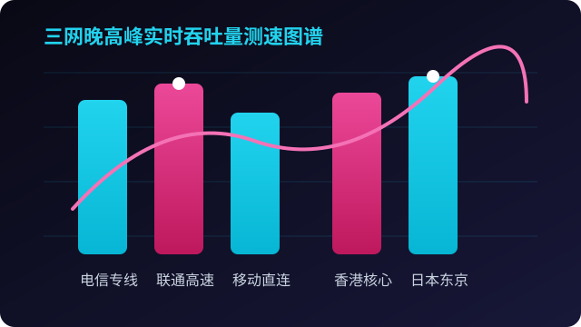
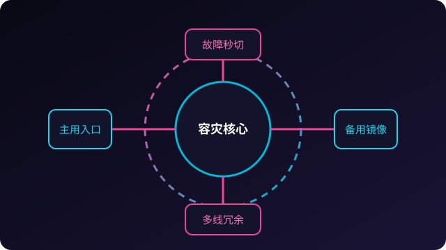
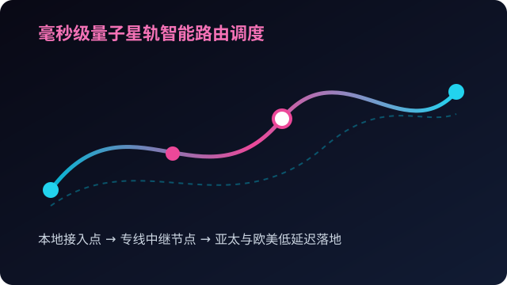
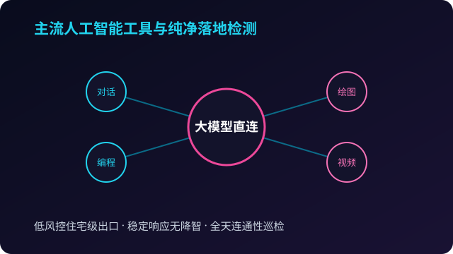

三网晚高峰实测不降速
每日 20:00 至 23:30 针对全国三大运营商宽带开展自动化吞吐量压测，单线程即可跑满百兆级家庭带宽，远程办公、海外代码拉取与超清点播始终维持极速秒开。
电信/联通/移动全适配
晚高峰均值 380+ 兆
专为电信、联通、移动宽带用户打造的备用测速与容灾访问门户。全天追踪香港、日本、新加坡与美国核心线路延迟丢包，提供多入口自动故障切换与低延迟跨境网络加速，确保高峰期依旧稳定流畅。
拒绝纸面参数，以电信、联通、移动真实宽带环境下的晚高峰基准测试作为线路验收标准。

每日 20:00 至 23:30 针对全国三大运营商宽带开展自动化吞吐量压测，单线程即可跑满百兆级家庭带宽，远程办公、海外代码拉取与超清点播始终维持极速秒开。

每组热门地区均部署主用专线与双路备用中继入口。当单一海缆维护或本地路由波动时，官方客户端与智能调度机制可在数秒内自动切换至备用镜像节点，业务与通话零中断。

内网中继直连亚太与欧美骨干机房，规避公网国际出口拥堵绕路。银河云官方专属客户端一键登录即用，内置智能规则分流，国内网站直连、海外请求走最近专线，免去繁琐配置。
每小时自动检测落地出口纯净度，确保影音解锁与对话绘图大模型请求稳定直达。
香港、台湾、新加坡、日本及美国原生出口持续维护，奈飞4K实测解锁自制与非自制剧集无代理报错，迪士尼超清片库顺畅加载，油管8K高码率视频拖动进度条无需等待缓冲。

针对频繁遭遇风控拦截的海外智能对话、代码助手、图像生成与视频创作平台，银河云精选低风险纯净落地出口，减少人机验证频次，保障长文本流式输出不断流、不降智。
按需选择月付体验或长周期容灾方案，所有档位均支持多终端同时在线与极速专线节点。
适合初次验证三网延迟与节点解锁质量
日常办公、追剧与智能工具高频首选
跨境电商、多端协同与重度影音用户
长期省心部署，享最高性价比与备用保障
| 对比维度 | 测速体验月卡 | 主力低延迟月卡 | 高并发季度专线 | 全节点年度容灾版 |
|---|---|---|---|---|
| 计费周期与价格 | 原价 25 元 / 月（新人8折 20 元） | 35 元 / 月 | 108 元 / 季 | 358 元 / 年 |
| 月度可用流量 | 100 千兆级额度 | 300 千兆级额度 | 500 千兆级额度 | 600 千兆级额度 |
| 同时在线终端数 | 3 台设备 | 5 台设备 | 8 台设备 | 10 台设备 |
| 晚高峰实测峰值 | 300 兆带宽档 | 600 兆带宽档 | 1000 兆带宽档 | 无上限专线通道 |
| 4K 流媒体与大模型解锁 | 支持主流节点 | 全节点稳定解锁 | 高优先级全解锁 | 全解锁 + 专属备线 |
请根据您的操作系统版本选择对应安装包，银河云官方专属客户端一键登录即用，免去繁琐配置，自动同步最新测速节点与容灾备用线路；后续客户端形态与多元接入方式将随产品演进持续更新，具体以官方控制面板最新公告为准。
适用范围：系统 10 及以上版本
内置一键测速与智能分流内核，解压即用，轻松应对办公与高清影音需求。
适用范围：系统 15 及以上版本
轻量省电架构，支持蜂窝移动网络与无线局域网无缝切换，断线自动重连。
适用范围：全系列系统均可使用
全面适配苹果芯片与传统处理器机型，支持状态栏快速切换测速最优节点。
适用方式：下载海外 Nextin 应用
苹果手机与平板用户请在海外商店下载 Nextin，专属海外账号请联系在线客服免费获取。
来自电信、联通、移动不同地区用户的长期使用记录与晚高峰稳定性评价。
“家里是华东电信千兆宽带，之前用过几家晚八点看油管都会转圈。换到银河云主力月卡后，连香港专线延迟稳定在 32 毫秒左右，晚高峰看 4K 奈飞和拉取海外代码库都毫无卡顿。”
“最打动我的是备用节点容灾机制。上周本地运营商局部路由波动，我在官方客户端里开了自动故障转移，几乎没感觉到断线就切到了新加坡备线，跨国视频会议全程清晰。”
“移动宽带找低延迟机场一直很难，原价 25 元的测速体验月卡趁新人 8 折 20 元试水，没想到日本东京和新加坡节点晚高峰依然能跑出两三百兆，直接续了年度容灾版，手机和电脑一起挂很省心。”
“苹果手机用 Nextin 配合客服给的海外账号三分钟就配置好了。日常高频使用对话大模型和查阅海外文献，出口很纯净，几乎不弹验证，客服响应也非常及时。”
汇总备用镜像访问、三网测速差异、故障切换与连接排查的核心疑问。